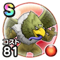

エビルホーク
6章5話〜7章4話こころ最大コスト+4スキルの斬撃・体技ダメージ+7%ドルマ属性斬撃・体技ダメージ+7%バギ属性耐性+7%転び耐性+7% / 7.5点
くわしい特徴
【ランク特殊効果】 こころ最大コスト+4スキルの斬撃・体技ダメージ+7%ドルマ属性斬撃・体技ダメージ+7%物質系へのダメージ+7%バギ属性耐性+7%転び耐性+7%麻痺耐性+7%HP50%以上で致死ダメージ時にごくまれにHP1で生き残るこころ最大コスト+4スキルの斬撃・体技ダメージ+7%ドルマ属性斬撃・体技ダメージ+7%バギ属性耐性+7%転び耐性+7%